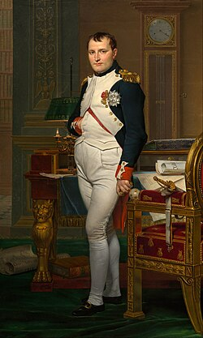

ATIVIDADE27/08.
Fulaninho de Tal sempre foi especialista em passar despercebido, exceto quando decidia aprontar. Com seu andar desajeitado e um sorriso de canto de boca, ele cruzava a cidade diariamente sem pressa. Dizia a lenda do bairro que ele já tinha trabalhado de tudo: de vendedor de picolé a especialista em consertar relógios antigos. Ninguém sabia ao certo sua idade, nem de onde vinha, mas todos tinham uma história curiosa para contar sobre ele. Se um gato ficava preso no telhado ou se o portão de alguém emperrava, lá vinha o Fulaninho com sua caixa de ferramentas enferrujada. Ele falava pouco, mas ouvia como ninguém, guardando os segredos da vizinhança com absoluta lealdade. Nas tardes de domingo, sentava na praça central para jogar dominó e tomar café coado na hora. Era o tipo de figura simples que transformava a rotina da rua em algo extraordinário sem fazer esforço. Quando partia para suas viagens misteriosas, o bairro inteiro sentia falta daquele seu jeito peculiar de existir. Fulaninho de Tal não buscava fama ou fortuna, apenas a arte quieta de viver a própria vida.
pagina 2
